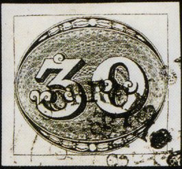

Return To Catalogue - Brazil 1843 issue, cancels - Brazil 1843 issue, forgeries part 1 - Brazil 1843 issue, forgeries part 2 - Brazil 1844 - Brazil 1850-1865 - Brazil 1866-1890 - Brazil 1891-1920 - Fiscal stamps, part 1 - Fiscal stamps, part 2 - Miscellaneous
Note: on my website many of the
pictures can not be seen! They are of course present in the
catalogue;
contact me if you want to purchase it.



30 r black 60 r black 90 r black
Value of the stamps |
|||
vc = very common c = common * = not so common ** = uncommon |
*** = very uncommon R = rare RR = very rare RRR = extremely rare |
||
| Value | Unused | Used | Remarks |
| 30 r | RRR | RR | |
| 60 r | RR | RR | |
| 90 r | RRR | RRR | |
For Brazil 1843 issue, cancels, click here.
Forgeries:
Forgeries of these stamps exist. There are 17 different kinds of forgeries known. Very old forgeries were made by Spiro in 1864, Zechmeyer made 3 different forgeries in 1890, followed by Erasmus Oneglia in 1897 and Giovani Patroni, also in 1897. In the 20th century forgeries were made by M.Mercier in 1910 (Mercier is the predecessor of the famous forger Fournier) and Jean de Sperati in 1914 (only the 60 r and 90 r). I'm not sure if the above date '1910' for Mercier is correct, since he went bankrupt in 1904 (source: Tyler, 'Philatelic Forgers, Their Lives and Works'). The other forgeries are of unkown makers (Source: http://www.firstissues.org/ficc/details/brazil_1.shtml). More information is also available at: http://www.philatoforge.co.uk/index.html.
In most forgeries the network of lines of the background is different from the genuine stamps. Examples:
Click here for forgeries part 1 and here for forgeries part 2.